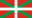

Hello world,
My name is Céline, I am 25 years old.
I come from Bidart, a lovely little town in the Basque Country  thus, inevitably, I love :
- 🏄♀ and 🤿,
- playing 🏐 on the 🏖️,
- 🥾 and 🚴♀ on the 🌄,
- having a drink or two 🦐️🥓🍹️🍷🥂 !!!
I also enjoy 🎦, 🎼, 🗺️✈️ and 🎮.
Fascinated by marine environments since my early childhood 🐚🐋🐙, I studied marine biology for many years, but I decided to stop last December after completing one year of PhD in the IFREMER because I realized that Research 🔬💸🦈 wasn't made for me.
I decided to jump into a new adventure : programming and web development 👩🏻💻 as I really enjoyed programming courses during my studies and I am fond of new technologies and sciences.
So, it is with a lot of joy that I join Superprof for a year, as part of a work/study training program, completing in the same time OpenClassrooms "Web developer" path to obtain my diploma 👩🎓
Here are three statements about me, but one is fake news :
1. I am a marine biologist who doesn't eat fish and crustacean 🐡🦐
2. I am an agronomist who doesn't eat fruits and vegetables 🥝🍆
3. I am a web developer (in the making) who devours series and video games 📺🕹️
This is my 1st HTML/CSS project for Superprof ! 🥳